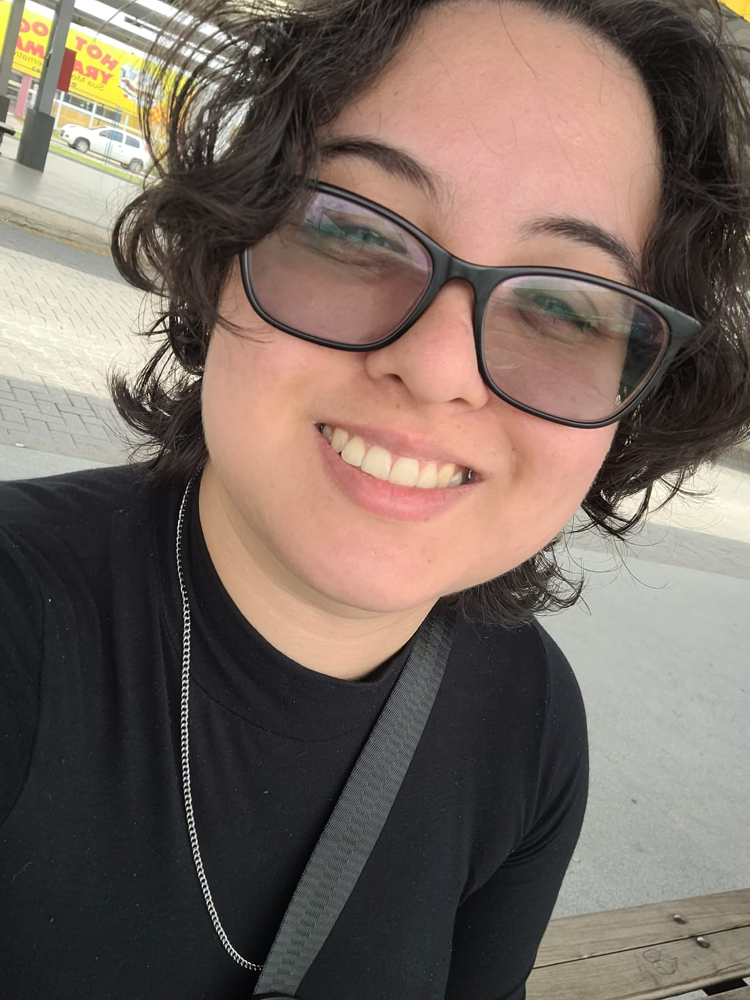

Meu nome é ana julia, tenho 23 anos sou nascida em Belém, Pará.
Comecei no mundo da programação recentemente, por conta que meu marido trabalha com isso.
Atualmente estou bastante interessada por front-end, quero aprender e me aperfeiçoar.
Além de front-end tambem sou apaixonada por jogo honkai star rail, genshin impact, league of legends e entre outros, mais pra frente irei aprender algo voltado para a area de games.